layout: true <div class="my-header"><a href="https://neuronest.net/"><img src="images/icone_transparent.png" /></a></div> <div class="my-footer"><p>© 2020 Neuronest</p></div> --- class: center, middle # The fundamentals of Neural Networks Guillaume Ligner - Côme Arvis --- # Artificial neuron - reminder .center[<img src="images/artificial_neuron.svg" style="width: 300px;" />] - What is an artificial neuron? - A math function : $\text{neuron} : \mathbf{x} \mapsto g(\langle \mathbf{w},\mathbf{x} \rangle + b)$ - Activation functions $g$: $tanh, sigmoid, reLU, eLU..$ - The different steps : - Perform a scalar product between $\mathbf{w}$ and $\mathbf{x}$: $\mathbf{w}^T \cdot \mathbf{x}$ - Add a bias: at this stage we have the pre-activation: $z = \mathbf{w}^T \cdot \mathbf{x} + b$ - Apply an activation function to $z$ to break linearity: $f(x) = g(\mathbf{w}^T \cdot \mathbf{x} + b)$ --- # Artificial neuron - reminder .center[<img src="images/artificial_neuron.svg" style="width: 300px;" />] - A neuron activates when a concept is detected in the input - Detected concept can be a combination of features from the visible layer, the input - Detected concept can also be a combination of previous, simpler concepts from previous neurons in the network --- # Set of same depth neurons:<br/> a hidden layer - What is a hidden layer of artificial neurons? - Neurons that detect similarly complex concepts as they recombine the same simpler concepts from previous layer -- - As a math function: $\mathbf{x} \mapsto g(W \cdot \mathbf{x} + \mathbf{b})$; $x \in\mathbb{R}^p \mapsto \mathcal{D}^m$ - Here $W$ is a matrix; $W \in \mathbb{R}^{m \times p}$ and $\mathbf{b}$ a vector; $\mathbf{b} \in \mathbb{R}^m$ -- - Some hidden layers examples for different activation functions: - $\text{layer}: \mathbb{R}^p \mapsto$ __$]0, 1[^m$__ (__$\sigma$__) - $\text{layer}: \mathbb{R}^p \mapsto$ __$]-1, 1[^m$__ (__$tanh$__) - $\text{layer}: \mathbb{R}^p \mapsto$ __$[0, +\infty[^m$__ (__$reLU$__) --- # Set of same depth neurons :<br/> a hidden layer - How to interpret this? - Mathematically, $g(W \cdot \mathbf{x} + \mathbf{b})$ is the matrix way to write the vector: $$ \begin{bmatrix} g(\mathbf{w_1}\cdot\mathbf{x} + b_1)\\\\ g(\mathbf{w_2}\cdot\mathbf{x} + b_2)\\\\ \vdots\\\\ g(\mathbf{w_m}\cdot\mathbf{x} + b_m) \end{bmatrix} $$ - $\mathbf{w_i}$ being the $i^{th}$ line in matrix $W$ - $g$ being the activation function for this layer - $g(\mathbf{w_i}\cdot\mathbf{x} + b_i)$ being the $i^{th}$ neuron --- # Set of connected layers : <br/> the Multilayer Perceptron .center[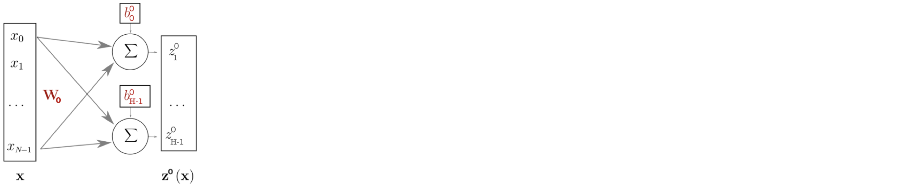] .whole_left_half[ - <sub>.firebrick[$\mathbf{z^0} = W_0 \cdot \mathbf{x} + \mathbf{b^0}$ ; $1^{st}$ set of pre-activations] - <sub>.grey[$\mathbf{h^0} = g(\mathbf{z^0}) = g(W_0 \cdot \mathbf{x} + \mathbf{b^0})$ $1^{st}$ hidden layer] - <sub>.grey[$\mathbf{z^1} = W_1 \cdot \mathbf{h^0} + \mathbf{b}^1$ ; $2^{nd}$ set of pre-activations] - <sub>.grey[$\mathbf{h^1} = g(\mathbf{z}^1) = g(W_1 \cdot \mathbf{h^0} + \mathbf{b^1})$ $2^{nd}$ hidden layer] - <sub>.grey[$\mathbf{h^j} = g(\mathbf{z^i}) = g(W_j \cdot \mathbf{h^i} + \mathbf{b^j})$; $j = i+1$ <br/>recurrent building of layers] ] .whole_right_half[ - <sub>.grey[$\mathbf{h^{n-1}} =$ last hidden layer of neurons. Next step : build the output] - <sub>.grey[$\mathbf{z^n} = W_n \cdot \mathbf{h^{n-1}} + \mathbf{b^{n}}$ last matrix product of parameters] - <sub>.grey[$\mathbf{f(x)} = softmax(\mathbf{z}^n)$ final output, here softmax for multiclass classification] ] --- # Set of connected layers : <br/> the Multilayer Perceptron .center[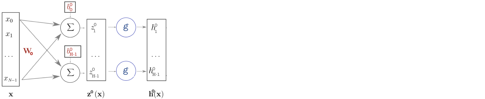] .whole_left_half[ - <sub>$\mathbf{z^0} = W_0 \cdot \mathbf{x} + \mathbf{b^0}$ ; $1^{st}$ set of pre-activations - <sub>.firebrick[$\mathbf{h^0} = g(\mathbf{z^0}) = g(W_0 \cdot \mathbf{x} + \mathbf{b^0})$ $1^{st}$ hidden layer] - <sub>.grey[$\mathbf{z^1} = W_1 \cdot \mathbf{h^0} + \mathbf{b}^1$ ; $2^{nd}$ set of pre-activations] - <sub>.grey[$\mathbf{h^1} = g(\mathbf{z}^1) = g(W_1 \cdot \mathbf{h^0} + \mathbf{b^1})$ $2^{nd}$ hidden layer] - <sub>.grey[$\mathbf{h^j} = g(\mathbf{z^i}) = g(W_j \cdot \mathbf{h^i} + \mathbf{b^j})$; $j = i+1$ <br/>recurrent building of layers] ] .whole_right_half[ - <sub>.grey[$\mathbf{h^{n-1}} =$ last hidden layer of neurons. Next step : build the output] - <sub>.grey[$\mathbf{z^n} = W_n \cdot \mathbf{h^{n-1}} + \mathbf{b^{n}}$ last matrix product of parameters] - <sub>.grey[$\mathbf{f(x)} = softmax(\mathbf{z}^n)$ final output, here softmax for multiclass classification] ] --- # Set of connected layers : <br/> the Multilayer Perceptron .center[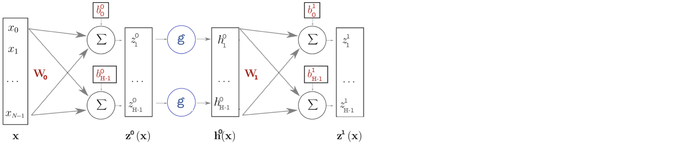] .whole_left_half[ - <sub>$\mathbf{z^0} = W_0 \cdot \mathbf{x} + \mathbf{b^0}$ ; $1^{st}$ set of pre-activations - <sub>$\mathbf{h^0} = g(\mathbf{z^0}) = g(W_0 \cdot \mathbf{x} + \mathbf{b^0})$ $1^{st}$ hidden layer - <sub>.firebrick[$\mathbf{z^1} = W_1 \cdot \mathbf{h^0} + \mathbf{b}^1$ ; $2^{nd}$ set of pre-activations] - <sub>.grey[$\mathbf{h^1} = g(\mathbf{z}^1) = g(W_1 \cdot \mathbf{h^0} + \mathbf{b^1})$ $2^{nd}$ hidden layer] - <sub>.grey[$\mathbf{h^j} = g(\mathbf{z^i}) = g(W_j \cdot \mathbf{h^i} + \mathbf{b^j})$; $j = i+1$ <br/>recurrent building of layers] ] .whole_right_half[ - <sub>.grey[$\mathbf{h^{n-1}} =$ last hidden layer of neurons. Next step : build the output] - <sub>.grey[$\mathbf{z^n} = W_n \cdot \mathbf{h^{n-1}} + \mathbf{b^{n}}$ last matrix product of parameters] - <sub>.grey[$\mathbf{f(x)} = softmax(\mathbf{z}^n)$ final output, here softmax for multiclass classification] ] --- # Set of connected layers : <br/> the Multilayer Perceptron .center[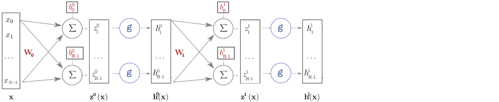] .whole_left_half[ - <sub>$\mathbf{z^0} = W_0 \cdot \mathbf{x} + \mathbf{b^0}$ ; $1^{st}$ set of pre-activations - <sub>$\mathbf{h^0} = g(\mathbf{z^0}) = g(W_0 \cdot \mathbf{x} + \mathbf{b^0})$ $1^{st}$ hidden layer - <sub>$\mathbf{z^1} = W_1 \cdot \mathbf{h^0} + \mathbf{b}^1$ ; $2^{nd}$ set of pre-activations - <sub>.firebrick[$\mathbf{h^1} = g(\mathbf{z}^1) = g(W_1 \cdot \mathbf{h^0} + \mathbf{b^1})$ $2^{nd}$ hidden layer] - <sub>.grey[$\mathbf{h^j} = g(\mathbf{z^i}) = g(W_j \cdot \mathbf{h^i} + \mathbf{b^j})$; $j = i+1$ <br/>recurrent building of layers] ] .whole_right_half[ - <sub>.grey[$\mathbf{h^{n-1}} =$ last hidden layer of neurons. Next step : build the output] - <sub>.grey[$\mathbf{z^n} = W_n \cdot \mathbf{h^{n-1}} + \mathbf{b^{n}}$ last matrix product of parameters] - <sub>.grey[$\mathbf{f(x)} = softmax(\mathbf{z}^n)$ final output, here softmax for multiclass classification] ] --- # Set of connected layers : <br/> the Multilayer Perceptron .center[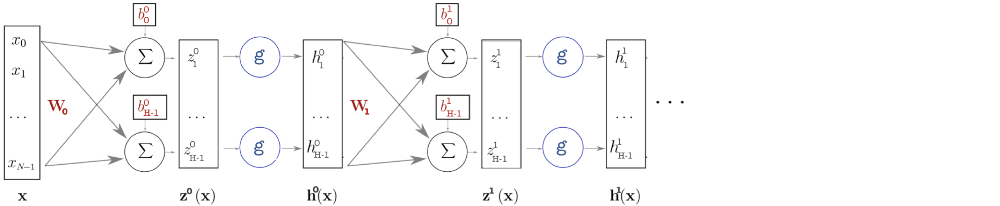] .whole_left_half[ - <sub>$\mathbf{z^0} = W_0 \cdot \mathbf{x} + \mathbf{b^0}$ ; $1^{st}$ set of pre-activations - <sub>$\mathbf{h^0} = g(\mathbf{z^0}) = g(W_0 \cdot \mathbf{x} + \mathbf{b^0})$ $1^{st}$ hidden layer - <sub>$\mathbf{z^1} = W_1 \cdot \mathbf{h^0} + \mathbf{b}^1$ ; $2^{nd}$ set of pre-activations - <sub>$\mathbf{h^1} = g(\mathbf{z}^1) = g(W_1 \cdot \mathbf{h^0} + \mathbf{b^1})$ $2^{nd}$ hidden layer - <sub>.firebrick[$\mathbf{h^j} = g(\mathbf{z^i}) = g(W_j \cdot \mathbf{h^i} + \mathbf{b^j})$; $j = i+1$ <br/>recurrent building of layers] ] .whole_right_half[ - <sub>.grey[$\mathbf{h^{n-1}} =$ last hidden layer of neurons. Next step : build the output] - <sub>.grey[$\mathbf{z^n} = W_n \cdot \mathbf{h^{n-1}} + \mathbf{b^{n}}$ last matrix product of parameters] - <sub>.grey[$\mathbf{f(x)} = softmax(\mathbf{z}^n)$ final output, here softmax for multiclass classification] ] --- # Set of connected layers : <br/> the Multilayer Perceptron .center[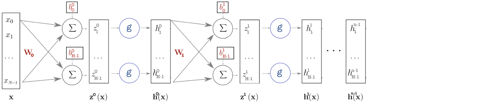] .whole_left_half[ - <sub>$\mathbf{z^0} = W_0 \cdot \mathbf{x} + \mathbf{b^0}$ ; $1^{st}$ set of pre-activations - <sub>$\mathbf{h^0} = g(\mathbf{z^0}) = g(W_0 \cdot \mathbf{x} + \mathbf{b^0})$ $1^{st}$ hidden layer - <sub>$\mathbf{z^1} = W_1 \cdot \mathbf{h^0} + \mathbf{b}^1$ ; $2^{nd}$ set of pre-activations - <sub>$\mathbf{h^1} = g(\mathbf{z}^1) = g(W_1 \cdot \mathbf{h^0} + \mathbf{b^1})$ $2^{nd}$ hidden layer - <sub>$\mathbf{h^j} = g(\mathbf{z^i}) = g(W_j \cdot \mathbf{h^i} + \mathbf{b^j})$; $j = i+1$ <br/>recurrent building of layers ] .whole_right_half[ - <sub>.firebrick[$\mathbf{h^{n-1}} =$ last hidden layer of neurons. Next step : build the output] - <sub>.grey[$\mathbf{z^n} = W_n \cdot \mathbf{h^{n-1}} + \mathbf{b^{n}}$ last matrix product of parameters] - <sub>.grey[$\mathbf{f(x)} = softmax(\mathbf{z}^n)$ final output, here softmax for multiclass classification] ] --- # Set of connected layers : <br/> the Multilayer Perceptron .center[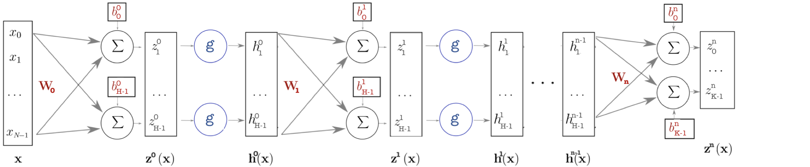] .whole_left_half[ - <sub>$\mathbf{z^0} = W_0 \cdot \mathbf{x} + \mathbf{b^0}$ ; $1^{st}$ set of pre-activations - <sub>$\mathbf{h^0} = g(\mathbf{z^0}) = g(W_0 \cdot \mathbf{x} + \mathbf{b^0})$ $1^{st}$ hidden layer - <sub>$\mathbf{z^1} = W_1 \cdot \mathbf{h^0} + \mathbf{b}^1$ ; $2^{nd}$ set of pre-activations - <sub>$\mathbf{h^1} = g(\mathbf{z}^1) = g(W_1 \cdot \mathbf{h^0} + \mathbf{b^1})$ $2^{nd}$ hidden layer - <sub>$\mathbf{h^j} = g(\mathbf{z^i}) = g(W_j \cdot \mathbf{h^i} + \mathbf{b^j})$; $j = i+1$ <br/>recurrent building of layers ] .whole_right_half[ - <sub>$\mathbf{h^{n-1}} =$ last hidden layer of neurons. Next step : build the output - <sub>.firebrick[$\mathbf{z^n} = W_n \cdot \mathbf{h^{n-1}} + \mathbf{b^{n}}$ last matrix product of parameters] - <sub>.grey[$\mathbf{f(x)} = softmax(\mathbf{z}^n)$ final output, here softmax for multiclass classification] ] --- # Set of connected layers : <br/> the Multilayer Perceptron .center[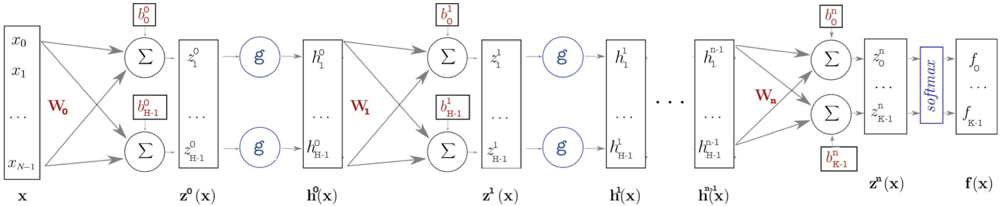] .whole_left_half[ - <sub>$\mathbf{z^0} = W_0 \cdot \mathbf{x} + \mathbf{b^0}$ ; $1^{st}$ set of pre-activations - <sub>$\mathbf{h^0} = g(\mathbf{z^0}) = g(W_0 \cdot \mathbf{x} + \mathbf{b^0})$ $1^{st}$ hidden layer - <sub>$\mathbf{z^1} = W_1 \cdot \mathbf{h^0} + \mathbf{b}^1$ ; $2^{nd}$ set of pre-activations - <sub>$\mathbf{h^1} = g(\mathbf{z}^1) = g(W_1 \cdot \mathbf{h^0} + \mathbf{b^1})$ $2^{nd}$ hidden layer - <sub>$\mathbf{h^j} = g(\mathbf{z^i}) = g(W_j \cdot \mathbf{h^i} + \mathbf{b^j})$; $j = i+1$ <br/>recurrent building of layers ] .whole_right_half[ - <sub>$\mathbf{h^{n-1}} =$ last hidden layer of neurons. Next step : build the output - <sub>$\mathbf{z^n} = W_n \cdot \mathbf{h^{n-1}} + \mathbf{b^{n}}$ last matrix product of parameters - <sub>.firebrick[$\mathbf{f(x)} = softmax(\mathbf{z}^n)$ final output, here softmax for multiclass classification] ] --- # Set of connected layers : <br/> the Multilayer Perceptron - Interpretation of MLP: a representation learning point of view .small80[ - Networks extracts high-level concepts that explain the output - High-level concepts extracted from smaller, simpler concepts ($1^{st}$ layers) ] <br/> -- .left-column30.small[ <img src="images/mlp_representation_learning.png" style="width: 280px;margin-left: -45%;margin-top: 5%" />] -- .right-column70.small80[- Starts with visible layer: $x$ to build the $1^{st}$ hidden layer] .right-column70.small80[- Simple concepts extracted: edges in image] .right-column70.small80[- Layers extract higher level concepts:] -- .right-column70.small80[- Given edges extracted, $2^{nd}$ layer can combine them to extract corners, contours] .right-column70.small80[- Given corners and contours, $3^{rd}$ layer can combine them to detect parts of the object] .right-column70.small80[- Given parts of the object, object in image can be recognized] --- # Element-wise activation functions - Only non linear blocks in neural networks - Element-wise functions that map the matrix product to the final output of a layer .left-column60.center[ 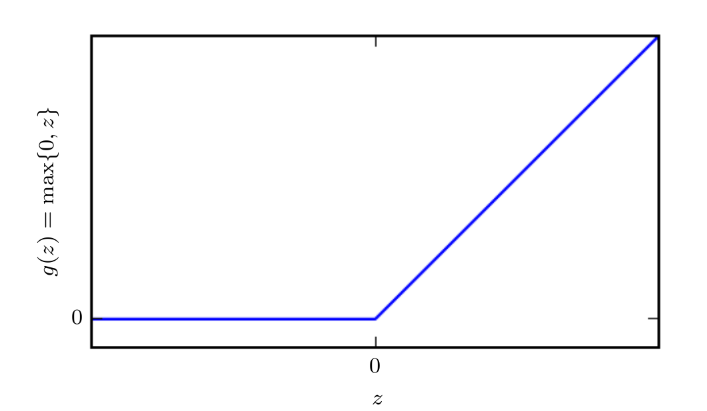 **ReLU**: the default activation function in feedforward neural networks ] .right-column40.small70[ - Very close to linear: - preserve linear model advantages that make them easy to optimize with gradient-based methods - preserve also many of the properties that make linear models generalize well - Being zero for negative inputs allows some sparsity and thus a regularized solution ] --- # Element-wise activation functions .center[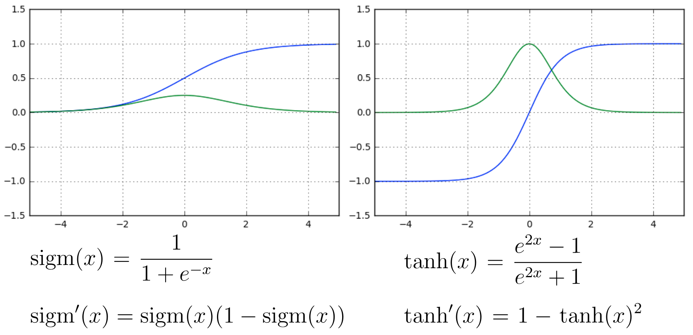] .center.small60[**Sigmoid** and **Hyperbolic tangent**: squashing activation functions] .small60[ - Problem: can suffer from **saturation** and make gradient-based learning difficult, meaning that it can become very flat and insensitive to small changes in its input - As a consequence, they are preferably used only as **output units**, mostly for binary classification tasks, in which the log of the cross-entropy loss used undoes the exponential of these activations ] --- # Softmax activation function $$ softmax(\mathbf{x}) = \frac{1}{\sum_{i=1}^{n}{e^{x_i}}} \cdot \begin{bmatrix} e^{x_1}\\\\ e^{x_2}\\\\ \vdots\\\\ e^{x_n} \end{bmatrix} $$ - Function directly applied on a whole vector and return a vector of values in $(0, 1)$ that sums to 1 - So, it can naturally represent a probability distribution, </br>with $p(Y = c|X = \mathbf{x}) = \text{softmax}(\mathbf{z}(\mathbf{x}))_c$ being the probability that the class $c$ is the associated class for the sample $\mathbf{x}$ according to our model, and $\mathbf{z}(\mathbf{x})$ being our pre-activation vector - In practice, the softmax activation function is generally used for multi-class classification problems --- # Training the network - Consider a neural network with only one hidden layer:</br>the actionable parameters are $( \mathbf{W}^h; \mathbf{b}^h; \mathbf{W}^o; \mathbf{b}^o ) = \mathbf{\Theta}$ -- - The goal is to find a $\mathbf{\Theta}^*$ that minimizes the negative log-likelihood: .center[ $\mathbf{\Theta}^* = \underset{\mathbf{\Theta}}{\operatorname{argmin}} nll(\Theta, \mathbf{x}, y) = \underset{\mathbf{\Theta}}{\operatorname{argmin}} - \log p(y | \mathbf{x} ; {\mathbf{\Theta}})$ ] -- - On a full training dataset with $n$ samples: $$ L(\Theta) = -\frac{1}{n} \sum\_{i=1}^{n} nll(\Theta, \mathbf{x}_i, y_i) + \gamma \Omega(\mathbf{\Theta}) $$ $\gamma \Omega(\mathbf{\Theta}) = \gamma (||W^h||^2 + ||W^o||^2)$ is an example of optional $l2$ regularization term --- # Binary classification network - We have for target:</br> - $Y \in \text{ } ${$0, 1$}$^n$, with $n$ the number of examples - Our assumption about the underlying distribution: - $Y\_i|(\mathbf{X\_i} = \mathbf{x}) \sim Bernoulli(b=f(\mathbf{x} ; \mathbf{\Theta}))$,</br> with $f$ the function constructed by our neural network, trained to estimate $b$ - A **sigmoid** output activation function is usually used to output a probability - The loss function to minimize in this case is the **binary cross entropy** --- # Multiclass classification network - We have for target:</br> - $Y \in \text{ } ${$0, 1,... K-1$}$^n$, with $n$ the number of examples - Our assumption about the underlying distribution: - $Y\_i|(\mathbf{X\_i} = \mathbf{x}) \sim Multinoulli(\mathbf{p}=f(\mathbf{x} ; \Theta))$,</br> with $f$ the function constructed by our neural network, trained to estimate $\mathbf{p}$ .small90[ - The $Multinoulli$ distribution is a generalization of the $Bernoulli$ distribution, with a vector $\mathbf{p} \in [0, 1]^K$ as parameter and $\sum\_{i=1}^{K} \mathbf{p}_i = 1$ ] - A **softmax** output activation function is usually used to output a probabilities distribution - The loss function to minimize in this case is the **categorical cross entropy** --- # Regression network - We have for target:</br> - $Y \in \mathbb{R}^n$, with $n$ the number of examples - Our assumption about the underlying distribution: - $Y\_i|(\mathbf{X\_i} = \mathbf{x}) \sim \mathcal{N}(\mathbf{\mu}=f(\mathbf{x} ; \Theta), \sigma^2 \mathbf{I})$,</br> with $f$ the function constructed by our neural network, trained to estimate $\mu$ - Usually we use an **identity** or a **ReLU** activation output function - The loss function to minimize in this case is the **mean squared error** --- # Neural network optimization: a stochastic approach .big110[ - Deep learning datasets are usually huge: $10^6 \sim 10^8$ training examples - In consequence, computing the gradient on the full training dataset can be extremely costly ] -- .big110[ - To tackle this, a solution is to compute the gradient of a **minibatch of samples** and perform an update step with it - This gradient is an **unbiased estimation** of the full gradient if the minibatch sampling is performed randomly ] -- .big110[ - Doing so, we improve the computation cost from $o(n)$ to $o(m)$, n and m being respectively the number of samples in the full dataset and in a minibatch ] --- # Stochastic Gradient Descent (SGD) .center[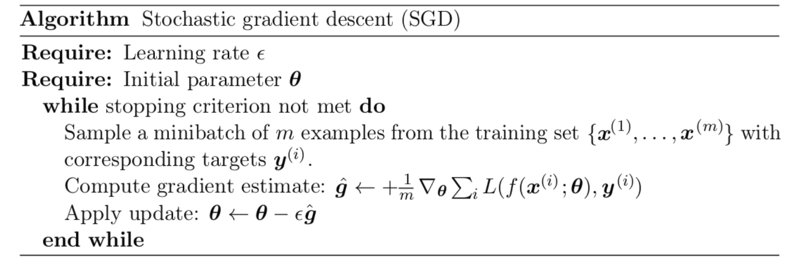] - Potential problem: the convergence and stability of SGD are strongly dependant of the learning rate $\epsilon$. - In addition, loss functions are often non-convex in deep learning.</br>How to tackle flat regions and use high curvature to our advantage? --- # Optimization with momentum - The term **momentum** comes from a physical analogy, in which the negative gradient is a force moving a particle through the parameter space - The idea is to consider **past gradients** as an **inertia** that leads the learning updates to accelerate or decelerate .left-column50[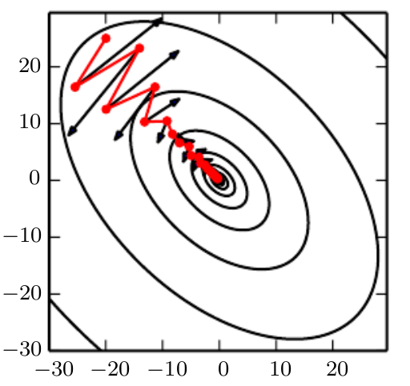] .right-column50[ Here an example of learning iterations through a parameter space with high curvature.</br></br> The red path indicates the path followed by the momentum learning rule as it minimizes this function. We see that the standard gradient descent wastes more time bouncing around, while the one with momentum fit better the curvature ] --- # SGD with momentum .center[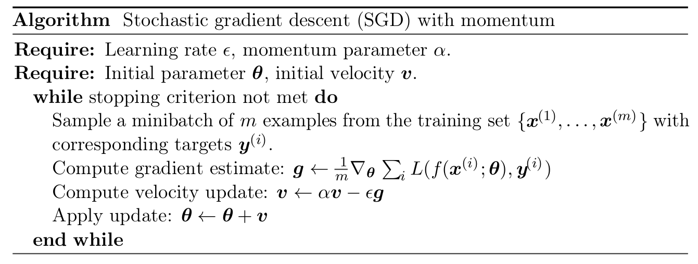] .small80[ - Gradients history now stored in the velocity variable $v$ - The hyperparameter $\alpha$ in $[0, 1]$ controls the weight of previous gradients to the current step update - Larger updates where the gradient sign is constant to accelerate in low curvature areas - $\alpha \to 0$ means no momentum at all and thus classic SGD - high $\alpha$ leads to give more importance to the accumulated gradients ] .small80[ - Still a problem: how to control the learning rate $\epsilon$ more efficiently? ] --- # RMSProp: the adaptive learning way - RMSProp, or Root Mean Square Propogation, proposes another approach: have a different learning rate **for each parameter** to update - Particulary suited to non-convex setting, changes the gradient accumulation into an **exponentially weighted moving average** - Doing so, parameters which had large gradients over time, will have smaller learning rates --- # RMSProp: the adaptive learning way .center[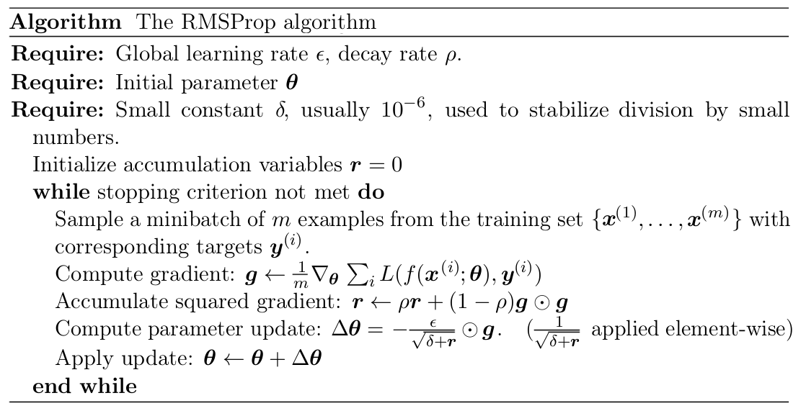] .center[A specialized learning rate for each parameter based on their accumulated squared derivatives] --- # Adam: the state of the art - The "Adaptive moments" optimization algorithm - Most used first order optimization method in the real world of deep learning - Combines the advantages of both **RMSProp** and **Momentum** and include some others improvements - Is generaly robust to the choice of hyperparameters --- # Optimizers comparison around a saddle point .left-column50[<img src="images/saddle_point_optimizers_2D.gif" style="width: 375px;" /></br></br>] .right-column50[<img src="images/saddle_point_optimizers_3D.gif" style="width: 375px;" /></br></br>] .center[Algorithms that use momentum and adaptive learning rate methods perfom better at such critical point] --- # Computing gradients: chain rule and backpropagation .big120[ - Chain rule: used to compute the derivatives of functions formed by composing other functions<br/><br/> - Backpropagation is the algorithm that makes effective use of the chain rule to compute the gradient of some loss with respect to the model's parameters ] --- # Chain rule .big140[**Chain rule scalar to scalar case**] .big110[ - If $f(x) = h(g(x)): x \xrightarrow[\text{}]{g} v$ $\\xrightarrow[\text{}]{h} z$ <br/> and $\frac{\mathrm d z}{\mathrm d v}$, $\frac{\mathrm d v}{\mathrm d x}$ are known <br/> then we can compute $\frac{\mathrm d z}{\mathrm d x} = \frac{\mathrm d z}{\mathrm d v} \cdot \frac{\mathrm d v}{\mathrm d x}$ ] .big110[ - Since neural nets are made of nested blocks differentiable everywhere we can use the chain rule everywhere ] --- # Chain rule .big140[**Chain rule general case**] .big110[ - $f(\mathbf{x}) = \mathbf{x} \in \mathbb{R}^m \xrightarrow[\text{}]{g} \mathbf{v} \in \mathbb{R}^n$ $\xrightarrow[\text{}]{h} z \in \mathbb{R}$ - $f(\mathbf{x})$ maps from vector to other vector to scalar ] -- .big110[ - $\frac{\partial z}{\partial \mathbf{x}\_{i}} = \sum\_{j} \frac{\partial z}{\partial \mathbf{v}\_j} \cdot \frac{\partial \mathbf{v}\_j}{\partial \mathbf{x}\_i}$ ] -- .big110[ - Vector notation: $\frac{\partial z}{\partial \mathbf{x}\_{i}} = (\frac{\partial \mathbf{v}}{\partial \mathbf{x}\_i})^T \cdot \nabla\_{\mathbf{v}} z = (\nabla\_{\mathbf{x}} z)\_i$ ] -- .big110[ - Vector notation whole gradient: $\nabla\_{\mathbf{x}} z = (\frac{\partial \mathbf{v}}{\partial \mathbf{x}})^T \cdot \nabla\_{\mathbf{v}} z$ </br> where $\frac{\partial \mathbf{v}}{\partial \mathbf{x}}$ is the $n × m$ Jacobian matrix of $g$ ] --- # Backpropagation Back-propagation refers to the method for **computing** the gradient Another algorithm, such as stochastic gradient descent, makes use of it to compute gradients and perform learning We are going to see how it works through two examples: - A simple toy example - A real life NN-involving example --- # Backpropagation A simple toy example: - We have gradients of $y$ with respect to $l_1$ - We have gradients of $l_1$ with respect to $l_0$ - This allows to backpropagate gradients of $y$ from with respect to $l_1$ to with respect to $l_0$ .left-column50[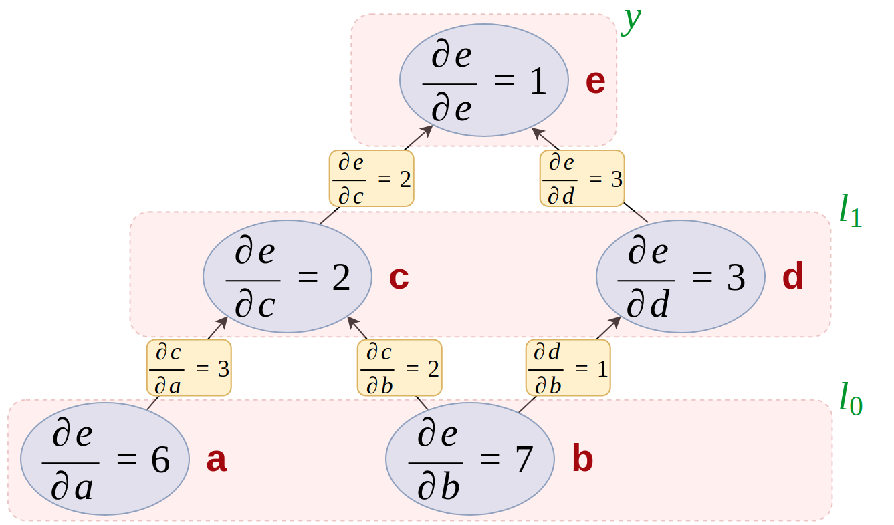] .right-column30[ Node .firebrick[b] derivative calculation: $\frac{\partial e}{\partial b} = \sum\_{j \in \(c, d\)} \frac{\partial e}{\partial j} \cdot \frac{\partial j}{\partial b}$ ] --- # Backpropagation A real life NN-involving example: .center[<img src="images/flow_graph_b.svg" style="width: 600px;" />] .left-column60[ $f\_\theta(\mathbf{x}) = P(y|\mathbf{x}) $ modeled by your model $ f(\mathbf{x}) = \begin{bmatrix} P\_\theta(y=0|\mathbf{x})\\\\ P\_\theta(y=1|\mathbf{x})\\\\ \vdots\\\\ P\_\theta(y=K-1|\mathbf{x}) \end{bmatrix} = softmax(z^o(x)) $ ] .right-column30[ Here the loss is the negative loglikelihood So, for a given sample with $y\_{true} = k$, we have $l(f(x), y ; \theta)$: $$ \begin{equation} = -\log(P\_\theta(y=k|\mathbf{x})) \\\\ = -\log(f(\mathbf{x})\_k) \end{equation} $$ ] --- # Backpropagation Compute partial derivatives of the loss - $\frac{\partial l(\mathbf{f(x)}, y)}{\partial \mathbf{f(x)}\_i} = \frac{\partial -\log \mathbf{f(x)}\_y}{\partial \mathbf{f(x)}\_i} = \frac{-1\_{y=i}}{\mathbf{f(x)}\_y}$ .center[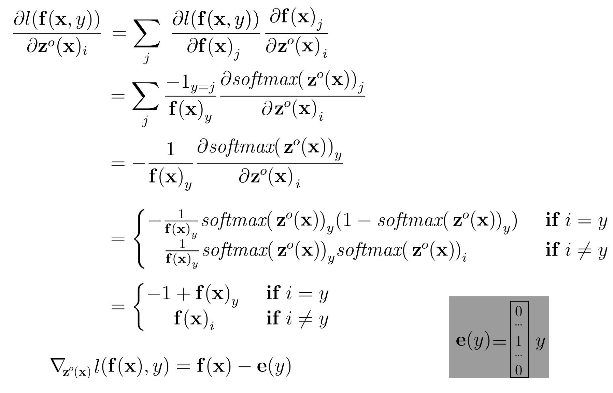] --- # Backpropagation Gradients - $\nabla\_{\mathbf{z}^o(\mathbf{x})} l(\mathbf{f(x)}, y) = \mathbf{f(x)} - \mathbf{e}(y)$ - $\nabla\_{\mathbf{b}^o} l(\mathbf{f(x)}, y) = \mathbf{f(x)} - \mathbf{e}(y)$ because $\frac{\partial \mathbf{z}^o(\mathbf{x})\_i}{\partial \mathbf{b}^o\_j} = 1\_{i=j}$ Partial derivatives related to $\mathbf{W}^o$ - $\frac{\partial l(\mathbf{f(x)}, y)}{\partial W\_{i,j}} = \sum\_{k} \frac{\partial l(\mathbf{f(x)}, y)}{\partial \mathbf{z}^o(\mathbf{x})\_k} \frac{\partial \mathbf{z}^o(\mathbf{x})\_k}{\partial W^o\_{i,j}}$ - $\nabla\_{\mathbf{W}^o} l(\mathbf{f(x)}, y) = (\mathbf{f(x)} - \mathbf{e}(y)) . \mathbf{h(x)}^\top$ --- # Backprop gradients .small90[ **Compute activation gradients** - $\nabla\_{\mathbf{z}^o(\mathbf{x})} l = \mathbf{f(x)} - \mathbf{e}(y)$ **Compute layer params gradients** - $\nabla\_{\mathbf{W}^o} l = \nabla\_{\mathbf{z}^o(\mathbf{x})} l \cdot \mathbf{h(x)}^\top$ - $\nabla\_{\mathbf{b}^o} l = \nabla\_{\mathbf{z}^o(\mathbf{x})} l$ **Compute prev layer activation gradients** - $\nabla\_{\mathbf{h(x)}} l = \mathbf{W}^{o\top} \nabla\_{\mathbf{z}^o(\mathbf{x})} l$ - $\nabla\_{\mathbf{z}^h(\mathbf{x})} l = \nabla\_{\mathbf{h(x)}} l \odot \mathbf{\sigma^\prime(z^h(x))}$ **Compute prev layer params gradients** - $\nabla\_{\mathbf{W}^h} l = \nabla\_{\mathbf{z}^h(\mathbf{x})} l \cdot \mathbf{x}^\top$ - $\nabla\_{\mathbf{b}^h} l = \nabla\_{\mathbf{z}^h(\mathbf{x})} l$ ] --- # Standardization - Normalization - Allows to control features scale - A requirement for ML algorithms which optimization is based on gradients or evaluation of distances - Values $X\_{i,j}$ in dataset can play a role in weight updates example of gradient, with logistic regression: $$\nabla\_{\theta\_j} J = -\frac{1}{n}\sum\_{i=1}^{n}{(y\_i - f\_{\theta}(X)\_i)X\_{i,j}}$$ $\rightarrow$ $X\_{i,j}$ scale leads to greater or lower weight updates --- # Standardization - Rescale features so they have standard normal distribution properties: <br> mean = 0 and standard deviation = 1 $$X_{standardized} = \frac{X - {\mu}}{\sigma}$$ $$\text{with } \mu = \frac{1}{n}\sum\_{i=1}^{n}{X\_i}, \sigma = \sqrt{\frac{1}{n}\sum\_{i=1}^{n}{(X\_i - \mu)^2}}$$ - Preferred where distance measures between values matters as bigger gaps between values is still possible $\rightarrow$ ex: K-Nearest Neighbor and clustering algorithms that use, for instance, Euclidian distance --- # Normalization - Features scaled to a fixed range: usually $[0, 1]$ - Min-Max scaling formula: $X\_{normalized} = \frac{X - X\_{min}}{X\_{max} - X\_{min}}$ - Fixed scale prevents unwanted outlier values from messing training with big derivatives but leads to small standard deviation and suppresses the effect of wanted outlier values - Similarly to standardization, it allows optimization to be more driven by feature importance than natural feature scale --- # Initialization - Initialization of matrix of parameters $W^i$ - At point zero network $f(x)$ is a constant: no gradient, no learning - Constant initialization makes the units that have the same activation function update the same way - Need to break symmetry between units to force them to learn different functions - Solution: random init, ex: $w \sim \mathcal{N}(0, 0.01)$ - however $\mathcal{N}$ may lead to extreme values making training unstable or causing the activation function to saturate --- # Initialization - Initialization of vectors of biases parameters $b^i$ - Usually biases are initialized to some constant - Constant value depends on the problem and is heuristically chosen Better initializations exist, such as Xavier Glorot - Aims at preserving the same units variance through the network - Helps in preventing exploding or vanishing values - $w\_i \sim \mathcal{N}(0, \frac{1}{N\_{in}})$ where $w\_i$ is used between two layers and $N\_{in}$ is the number of input neurons --- # Batch Normalization - Batch Normalization is a method to optimize deep neural network - The optimization issue is due to the gradient that is used - The gradient (the derivatives) tell us how to update each parameter, under the assumption that the other parameters, and thus the other layers, will remain the same - In practice all parameters are updated at the same time, leading to unexpected results --- # Batch Normalization .center[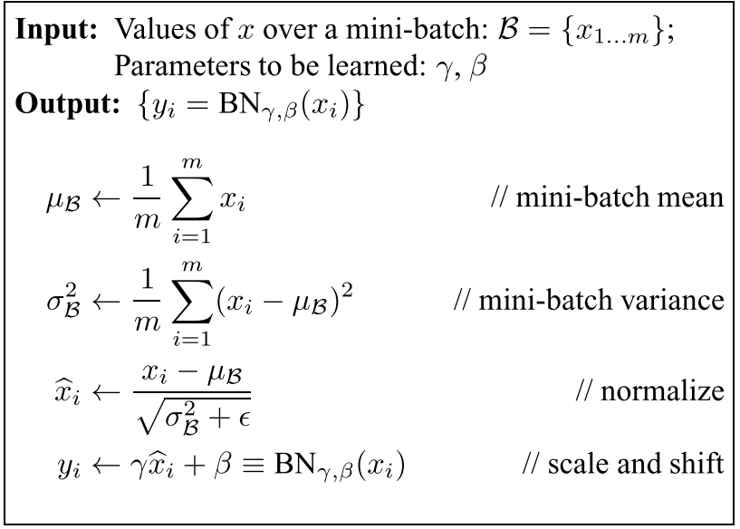] --- # Batch Normalization - Removes gradient updates that would only lead to increases of standard deviation or mean in the unit. This kind of action has been made useless due to the normalization operation - Stabilizes learning by limiting the effects of joint updating through units standardization - Eases initialization of NN parameters: makes training less sensitive to starting point - Provides some regularization - Allows to better build very deep networks --- # Regularization - A central ML objective is generalization: how to make the algorithm perform well on unseen samples? - Strategies designed to lower test error even at expense of train error are refered to as regularization techniques - A few regularization techniques examples: - Putting extra constraints on the model parameter values (can be done by constructing a generalized Lagrange function) - Adding extra terms to the cost function, can be thought of as a soft constraint on the parameter values $\rightarrow$ ex: ridge and lasso penalties --- # Regularization .big120[Dropout at **training** time] - Keep normal activation with probability $p$ - Removes neuron influence by setting its activation to $0$ with probability $1 - p$ - Bernoulli mask sampled for a forward pass / backward pass pair .left-column50[ .center[ .small80[Neural Net __without__ dropout]<br/> 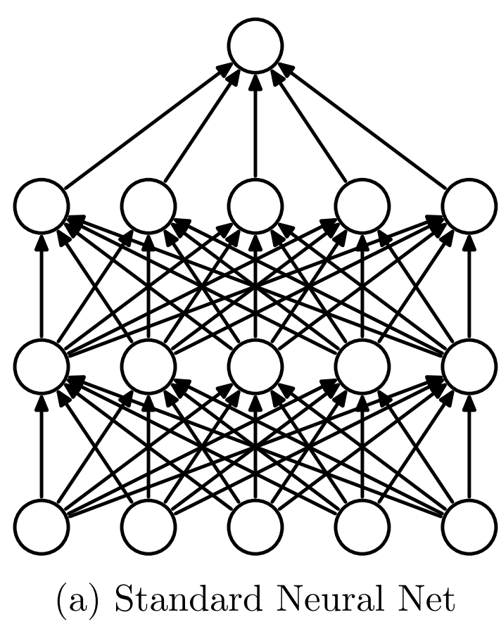 ] ] .right-column50[ .center[ .small80[Neural Net __with__ dropout]<br/> 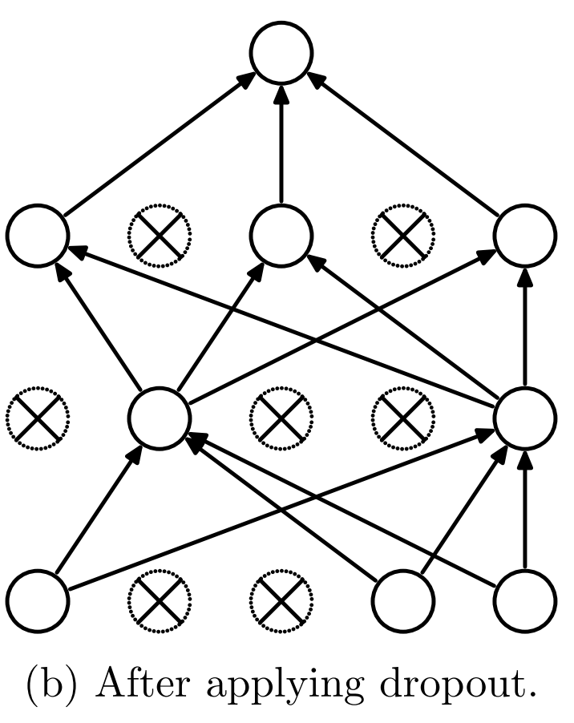 ] ] --- # Regularization .big120[Dropout at **testing** time] - At test time, multiply activation by $p$ to keep same level of activation .center[<img src="images/dropout_traintest.png" style="width: 700px;margin-top: 0%;margin-left: 0%;" />] --- # Regularization .big120[**Dropout interpretation**] - Leads to redundant data representation - A concept found by a neuron cannot be used further if neuron killed - A concept must be found by several neurons to be propagated forward - Reduces dependency on a particular neuron, reduces overfitting - Harder for the model to rely on a particular neuron to learn irrelevant features --- # Regularization .big120[**Dropout cancelled: Overfitting Noise**] .center[<img src="images/dropout_curves_1.svg" style="width: 600px;" /><br/>] --- # Regularization .big120[**Dropout: a bit**] .center[<img src="images/dropout_curves_2.svg" style="width: 600px;" /><br/>] --- # Regularization .big120[**Dropout too much: Underfitting**] .center[<img src="images/dropout_curves_3.svg" style="width: 600px;" /><br/>] --- # Choosing a Framework .center[] - Most famous Deep Learning framework - Suited to huge production deployments - TensorFlow comes with two tools that are widely used - TensorBoard for the effective data and network visualization - TensorFlow Serving for rapid deployments of algorithms and experiments --- # Choosing a Framework <br> .center[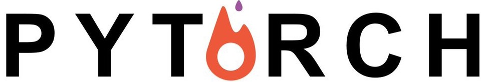] - PyTorch was introduced by Facebook, amongst others, in January 2017 .left-column50[ - Dynamic computational graphs, defined by run ] .right-column50[ <img src="images/pytorch_dynamic_graph.gif" style="width: 375px;margin-top: 0%;margin-left: 0%;" /> ] .left-column100[ - Easy syntax, allows to easily design complex models, more popular in the research community - Similar to TensorFlow's eager execution ] --- # Choosing a Framework .small80[ <br/> <br/> .center[] ] - Deep Learning Python wrapper of Deep Learning frameworks: either TensorFlow or Theano as backend - Very easy to handle - Suited to fast and easy prototyping effective neural networks - Not as flexible as Tensorflow and PyTorch when it comes to designing very custom models --- # Keras sequential API - Easiest way to quickly create a model - Multiclass neural network example: .center[<img src="images/keras_sequential_api.png" style="width: 650px;" />] --- # Keras functional API .left-column70.small70[ 1 - Defining Input - Unlike the Sequential model, you must create and define a standalone Input layer that specifies the shape of input data - The input layer takes a tuple argument that indicates the shape of the input - If input is a vector, shape leaves room for the mini-batch size, thus often hanging last axis shape value 2 - Connecting - The layers in the model are connected pairwise - When defining a layer, you specify which layer is the input to this layer - Input to layer is placed between brackets after defining layer 3 - Creating the Model - After creating layers and connecting, define the model - Used to summarize, fit, evaluate and make predictions - Keras has a Model class. You only have to specify input and output layers ] .right-column30[ <br/> 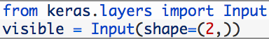 <br/> <br/> <br/> <br/> <br/> <br/> <br/> <br/> 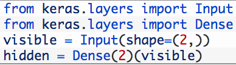 <br/> <br/> <br/> <br/> <br/> 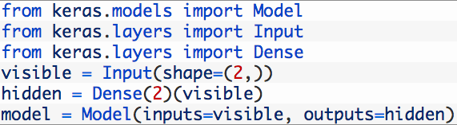 ] --- # Keras functional API .small80[Example Functional API code for Multilayer Perceptron]<br/><br/> -- .small80[Code] .center[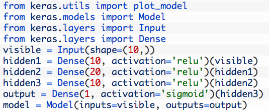] -- .small80[Network structure] .center[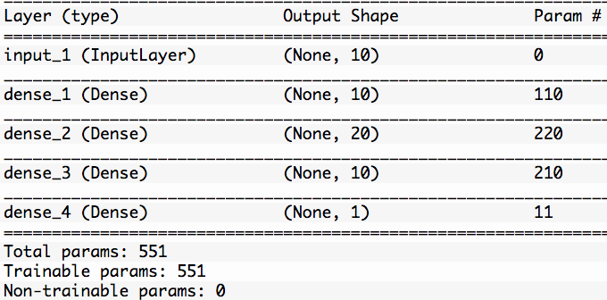] --- # Keras functional vs sequential API Functional API - Suited to models with multiple input sources and output destinations - When designing models that re-use layers Sequential API - Fastest and easiest way to design neural network models